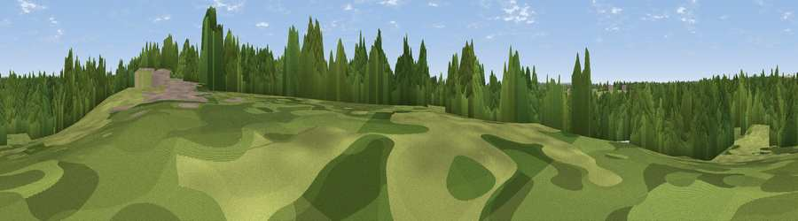

Viewpoint near Rowlands Castle
#43754 in England · top 92% of its area beats it · near Rowlands CastleWhere it is
The exact computed spot (SU 72140 09059). Click the marker for map links.
The view, rendered

A 360° render of this exact spot computed from the terrain model, tree cover and land cover — summer colours, afternoon light, calibrated against photographs of famous viewpoints. Real trees, hedges and buildings will differ in detail.
The panorama
Grey silhouette: terrain skyline in each direction (720 bearings, Earth curvature and refraction included). Dashed green: skyline with trees (+15 m) and buildings (+8 m) as obstacles. Blue strip: how far the ground is visible on each bearing.
Where the view opens
Wedge length = distance to the farthest visible ground on that bearing (vegetation-aware). Rings at 10, 25 and 50 km.
What fills the view
56% woodland · 30% grassland · 10% built-up · 2% cropland · 2% water
Angular shares of the visible panorama (visual magnitude), not map area. Landscape diversity 0.47 (0–1 Shannon).
Key numbers
More beautiful places nearby
The staircase of upgrades: each row has a higher view potential than everything closer. Driving times are estimates from straight-line distance, calibrated against real road routing — check an actual route before setting out.
| Place | Direction | Drive | Score |
|---|---|---|---|
| Comley Hill | ESE · 2 km | ~5 min | 61.4 |
| Viewpoint near Purbrook | SW · 5 km | ~10 min | 69.9 |
| Viewpoint near Purbrook | WSW · 5 km | ~11 min | 73.6 |
| Windmill Hill | N · 7 km | ~14 min | 74.0 |
| Viewpoint near Purbrook | WSW · 7 km | ~15 min | 75.4 |
| Viewpoint near Southwick | WSW · 8 km | ~16 min | 76.6 |
| Viewpoint near Stoughton | E · 10 km | ~20 min | 79.5 |
| Viewpoint near Buriton | N · 11 km | ~21 min | 80.0 |
50.87654, -0.97602 · source: osm viewpoint · position refined by local search. Computed location — check access rights before visiting.